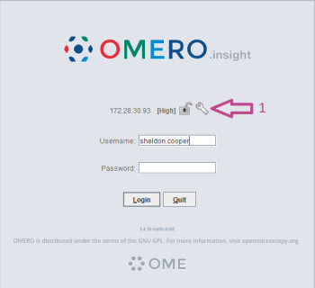
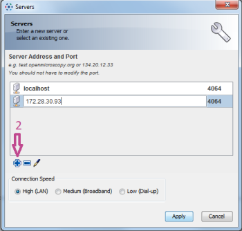
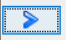
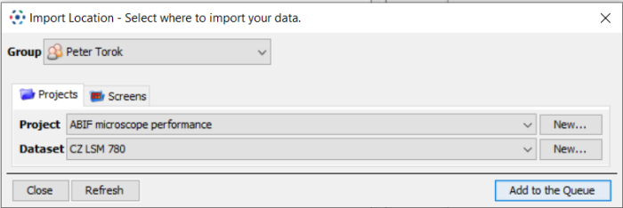
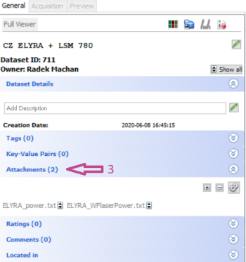

All ABIF users belonging to SCELSE research groups have an OMERO account. Your username is the name in the email address you have registered to the microscope booking system; e.g. if you register with the email address: MyName@ntu.edu.sg, your OMERO username will be MyName (note that unlike emails, OMERO usernames are case sensitive). Alternatively, if you are not an ABIF user, you can register for an account here. Once your account has been created you can proceed to login to OMERO via the web interface and use the “Forgot your password?” link to reset your password.
Note: If you are outside of the campus, you need to use VPN to connect to NTU network before accessing the OMERO server.
Open this link in your web browser
1. Download OMERO.insight client. Standalone versions for Windows or Mac as well as ImageJ plugin are available. Note, that older versions of OMERO.insight than 5.5.X are not able to connect to the server.
2. The first time you open the client, click on the spanner icon (1) to specify the server IP address.
3. Click the plus icon (2) to add an IP address and type the SCELSE server address 10.97.120.173
4. Log in with your username and password.
1. Press the following icon in OMERO.insight (the web browser interface does not support image upload) and a file-explorer-style window will appear.
2. Select the image files (or a whole folder) to upload and add them to the queue by pressing . You will be prompted to select a project and a dataset to which the uploaded data will be added. Either select an existing project/dataset or create new ones.
The selected files/folders will then appear on the right-hand side of the upload dialogue window.
3. Start the actual upload.
Note: only image files can be uploaded in the way described; non-image files (e.g. text files with notes on the experiment) can be attached to a project, a dataset or an individual image. Attachments are managed in the object (project/dataset/image) details panel on the right-hand side of the main OMERO window (3):
To learn more about OMERO and its features, kindly refer to the online Help.
The drive is mapped as drive Z: at all microscope workstations in the facility.
The drive can be mapped (right-click at “This PC” in the File Explorer and select “Map network drive…” from the menu) at any computer connected to SCELSE network (e.g. the offline analysis workstations located at SCELSE, levels B2 and B3) using the following details:
Path: \\ABIFdiskStation\share [\\10.97.120.163\share]
Username: ABIFuser
Password: scelse
The offline analysis workstations are connected to NTU network and to Internet and can be used for transferring your data from the shared drive to a cloud storage, for example. If you do not have access to the offline analysis workstations, approach ABIF staff for assistance.
Note that the shared drive is intended only for data transfer, not for data storage. All files older than 15 days will be automatically deleted.